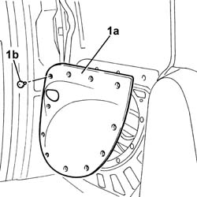
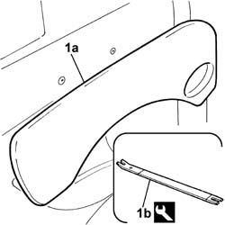
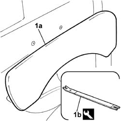
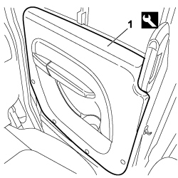

7020C30 sliding door interior panel - r+r
- Path
- Procedures > 70 FITTINGS > 7020 LOAD CARRYING COMPARTMENT DOORS > 7020C sliding side door > 7020C30 sliding door interior panel - r+r
- Kind
- repair procedure (removal / refitting; the operation number is the code)
- Applies to
- all engines; all production periods
- Interactive page
- https://sloeber94.github.io/elrnDB-fDbl/en/#/2585058
Applies to: engines: 1.2 8v, 1.6 16v, 1.3 JTD 16V, 1.9 JTD 8V, 1.9 DIESEL; all production periods
 Removing
Removing
 Refitting
RefittingOp. 7020D68 TRIM FOR LOCK IDLER FOR ONE SLIDING SIDE DOOR, LEFT OR RIGHT - R.R.
Applies to: engines: 1.2 8v, 1.6 16v, 1.3 JTD 16V, 1.9 JTD 8V, 1.9 DIESEL; all production periods; only with equipment: Cargo trim level
1. Remove the panel (1a), prising off the retaining studs (1b).

Applies to: engines: 1.2 8v, 1.6 16v, 1.3 JTD 16V, 1.9 JTD 8V, 1.9 DIESEL; all production periods; only with equipment: Doblò trim level
1. Remove the panel (1a) prising off the retaining studs using the tool (1b).
 | Name | Country |
|---|---|---|
1b | Scraper blade | 1.878.077.000 |

Applies to: engines: 1.2 8v, 1.6 16v, 1.3 JTD 16V, 1.9 JTD 8V, 1.9 DIESEL; all production periods
Refitting
RemovingCheck that the panel fixing studs are not damaged.
If they are, replace the studs.
Fit the door panel and secure it with the studs to the bodywork.
Op. 7020D68 TRIM FOR LOCK IDLER FOR ONE SLIDING SIDE DOOR, LEFT OR RIGHT - R.R.
Applies to: engines: 1.6 16v, 1.3 JTD 16V, 1.9 JTD 8V; all production periods; only with equipment: 7 seater
Removing
Refitting1. Remove the panel (1a) prising off the retaining studs using the tool (1b).
| Name | Country |
|---|---|---|
1b | Scraper blade | 1.878.077.000 |

Applies to: engines: 1.6 16v, 1.3 JTD 16V, 1.9 JTD 8V; all production periods; only with equipment: 7 seater
Refitting
RemovingCheck that the panel fixing studs are not damaged.
If they are, replace the studs.
Fit the door panel and secure it with the studs to the bodywork.
Applies to: engines: 1.4 8v, 1.6 16v, 1.3 JTD 16V, 1.9 JTD 8V; production: da 12/03; only with equipment: MY 2005
Removing
Refitting
Applies to: engines: 1.4 8v, 1.6 16v, 1.3 JTD 16V, 1.9 JTD 8V; production: da 12/03; only with equipment: MY 2005
Refitting
Removing